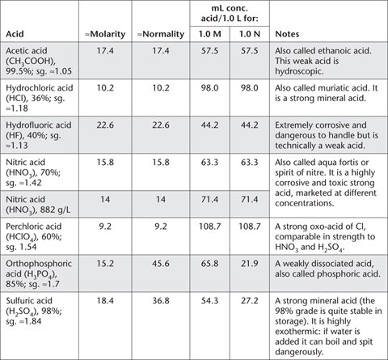

The two tables in this Appendix provide information on acids commonly used in the book. Table App. 3.1 deals with the usual properties of four concentrated acids, while Table App. 3.2 provides information on approximate molarities for a range of dilutions. Note that these acids may be marketed with different chemical concentrations, which should be taken into account.
All dilute acid solutions are to be made from relevant reagent grade concentrated acids, similar to those in Table App. 3.1. When the strengths/concentrations of these acids differ from those specified in relevant methods or in this Appendix, appropriate correction of volumes/weights should be made.
Table App. 3.1. Some summary details on reagent grade concentrated acids.

Care should be taken when handling all concentrated acids, particularly HF, H2SO4, HNO3, HClO4 and HCl. Aliquots of concentrated H2SO4 should always be added to an adequate volume of deionised water, never water to acid. Guidelines for the preparation of 1.0 L volumes of dilute acids are provided in Table App. 3.2.
Table App. 3.2. Guidelines for the preparation of 1.0 L volumes of dilute acids, following dilution with deionised water.
mL of concentrated acid/L (unless otherwise stated) |
Approximate molarity |
Notes |
Acetic acid solutions |
|
|
58.8 |
2 |
3 |
Hydrochloric acid solutions |
|
|
500 |
5.0 |
2 |
400 |
4.0 |
2 |
100 |
1.0 |
2 |
50 |
0.5 |
2 |
100 mL of 1.0 M |
0.1 |
3 |
Nitric acid solutions |
|
|
107 |
1.5 |
3 |
71.4 |
1.0 |
3 |
100 mL of 1.0 M |
0.1 |
3 |
Sulfuric acid solutions |
|
|
250 |
4.5 |
1 |
125 |
2.25 |
1 |
55.6 |
1.0 |
1 |
42 |
0.75 |
1 |
27.7 |
0.5 |
1 |
100 mL of 1.0 M |
0.1 |
3 |
50 mL of 1.0 M |
0.05 |
3 |
20 mL of 1.0 M |
0.02 |
3 |
100 mL of 0.1 M |
0.01 |
3 |
1. Carefully add aliquot of concentrated H2SO4 to about 700 mL deionised water. Cool and dilute to 1 L with deionised water and store in a borosilicate or strong plastic bottle.
2. Add aliquot of concentrated acid to a volume of deionised water, cool, then make to 1 L with deionised water.
3. Add aliquot of dilute acid to a volume of deionised water and make to 1 L with deionised water.